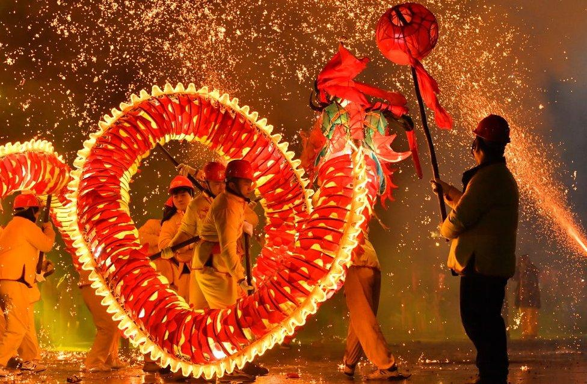

Nuestra ciudad

Vista de la ciudad
Vista de la ciudad de Wachin City desde el aire, mostrando sus edificios y calles.

Baile tradicional
Un baile tradicional de la Wachin Fest, celebrada en conmemoración de la fundación de la ciudad.

Templo budista
Un templo budista en Wachin City, representativo de la cultura y religión local.
Nuestra historia
Wachin City anteriormente llamada 高贵的瓦青城及其后裔 (La noble ciudad de Wang Ching y su descendencia), es la ciudad fundada el 5 de octubre de 1845 por Wang Ching, anteriormente llamado Aisin Gioro Zhenyu, príncipe yi del clan chino Aisin Gioro, cuyo objetivo original era la preservación de Zhenyu y su descendencia. Nacido de una fuerte paranoia de Zhenyu, al ir perdiendo la guerra con su clan rival, Shagguan y temiendo su posible derrocamiento. Debido a este miedo, Zhenyu tomó a su familia y a unas pocas familias amigas y decidió exiliarse de China vía marítima, llegando a Argentina luego de 2 meses, específicamente a la provincia de La Pampa donde cambiaria su nombre a Wang Ching y fundaría un pequeño pueblo llamado 高贵的瓦青城及其后裔 (La noble ciudad de Wang Ching y su descendencia) que posteriormente se llamaría Wachin City.
Nuestra identidad
Nuestra identidad se basa en la preservación de las tradiciones y valores del clan Aisin Gioro, manteniendo viva la cultura y la historia de nuestros antepasados. Teniendo museos con cuadros, antiguedades y reliquias pertenecientes a nuestro fundador y sus descendientes las cuales se han ido pasando de generacion en generacion.
Ademas de costumbres y eventos culturales tradicionales de la Antigua China, mismos que en su mayoria se llevan a cabo en la Wachin Fest que es la conmemoracion por la fundacion de la ciudad. Como por ejemplo la tradicional Danza del Dragon para ahuyentar a los malos espiritus o el desarrollo de la caligrafía, poesía, música con gongs y flautas como medio artistico, y juegos como el touhu (lanzamiento de flechas) como medio de entretenimiento.
Nuestros barrios
Nuestra ciudad cuenta con 3 barrios principales. El más destacado y caro de la ciudad es Wachin-Tong D.C., donde residen los descendientes de Ching y las demás familias que acompañaron a la dinastia. Luego se encuentran 2 barrios muy populares siendo el primero de este Wachin Street y el otro Los Wachos. Dos barrios los cuales brillan por tener diversos lugares y atracciones mas economicas para visitar a diferencia de Wachin-Tong D.C. Ambos barrios incluyen restaurantes, parques, cines, centros comerciales, cafeterias y demas.
Otras características
Datos clave
- Fundación
- 5 de octubre de 1845
- Fundador
- Wang Ching (Aisin Gioro Zhenyu)
- Ubicación
- La Pampa, Ruta Nacional 20, km 33
- Población
- 10.067 habitantes (dato ficticio)
- Gentilicio
- Wachinense
- Clima
- Templado semiárido, de veranos cálidos e inviernos frescos